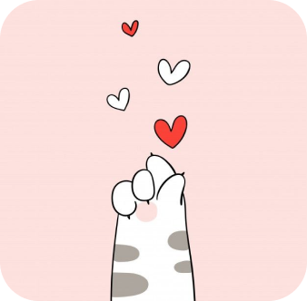
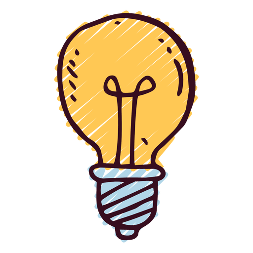
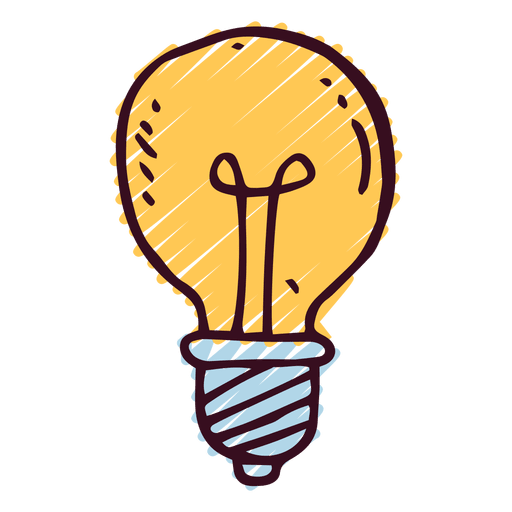

Como Posso Ajudar?
-Adote um gato:se voce estive procurando um animal de estimaçao, considere adotar um gato em vez de comprá-lo em uma loja de animais ou de um criador
-Faça voluntariado em um abrigo: se voce tem tempo livre, considere fazer trabalho voluntario, em um abrigo de animais.
-Doe para uma organizaçao de resgate:Se voce nao puder adotar um gato ou fazer trabalho voluntário em um abrigo, considere fazer uma doaçao para uma organizaçao de resgate. Eles precisam de recursos para continuar ajudando os gatos que estao em busca de lares.
-Divulgue a causa:compartilhe informaçoes sobre a adoçao de gatos em suas redes sociais e entre seus amigos e familiares. Quanto mais pessoas souberem maior a chance de que gatos sejam adotados.
Alguns gatinhos disponiveis


fred
marie
doug
mavis
hagrid
fumaça
04 anos de idade, macho, castrado, timido.
05 anos de idade, femea, nao castrada, afetuosa.
08 anos de idade, macho,castrado, agressivo
02 anos de idade, femea, castrada,curiosa.
07 anos de idade, macho, nao castrado, brincalhao.
01 ano de idade, femea, nao castrada, afetuosa.
atraves dessa wikipedia voce pode encontrar mais informaçoes
 
